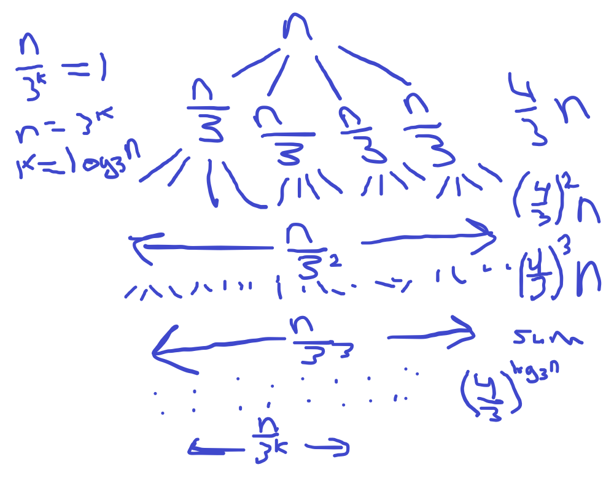

(a) T(n) = 2T(n/3) + n
(b) T(n) = 3T(n/3) + n
(c) T(n) = 4T(n/3) + n

| 1 |
2 |
3 |
4 |
5 |
6 |
7 |
8 |
9 |
10 |
| 31 |
-41 |
59 |
26 |
-53 |
58 |
97 |
-93 |
-23 |
84 |
Recursively
base case is only one element in the array, just return that element
Divide the array in half
Compare the left sum, the right sum and a combination of the left sum + right sum (So after the base case the next comparison would be the base case of the left, the base case of the right and a combination of the base cases)
The left sum is the resursive return on the left side of the array, the right sum is the recursive return of the right side
The max of all the recursive calls will be the absolute max of the array
Since each recursive call is n/2 of the previous we know that this is O(log(n)) by drawing out a recursive tree
Basically do a mergesort but keep track of the number of times the sort needs to rearrange indexes
Divide array in half and recursively run on left half and right half
Keep halfing until the base case of one element in the array
Merge the left half and the right half
While merging check if left index is greater than right, if it is increment a counter
Return the counter from the merge step and add it together with all other recurcive merge steps that were called
This is just a merge sort with an extra linear step of incrementing a counter so we know this is O(nlogn)
5. Week 2 problem batmanacci on Kattis.
(a) Describe the solution for inputs N
and K using a recursive formula or pseudo-code and analyze the
running time of your algorithm
Since [n] is [n-1] + [n-2] we know if the length of k is greater than the length of [n-2] then k is the [k-length[n-2]] element in [n-1]
We can recursively loop through this logic of shifting the string number and character index until we get the the base case where k = length of string number and depending on the index of the string number we can get the letter since we know the first two strings
def batmanacci(string_number, character_index):
if string_number == 1:
return "N"
elif string_number == 2:
return "A"
else:
while string_number > 2:
if character_index > fibNumbers[string_number - 2]:
character_index -= fibNumbers[string_number - 2]
string_number -= 1
else:
string_number -= 2
return batmanacci(string_number, character_index)
(b) Implement your solution using your
prefered language and submit your implementation via Kattis.
6.
[Optional] Week 2 problem closestpairs2
on Kattis.
Submit your solution via Kattis.
NOTE: Unfortunately, the CPU time limit for this problem is very
tight and penalizes slower executing languages... My Python
solution got a "Time Limit Exceeded" error whereas a C++ solution
passed even though they both used the same algorithm. So, either
use a "fast language" like C++, C, Rust, ... or be willing to
accept that the judge will reject your correct solution...